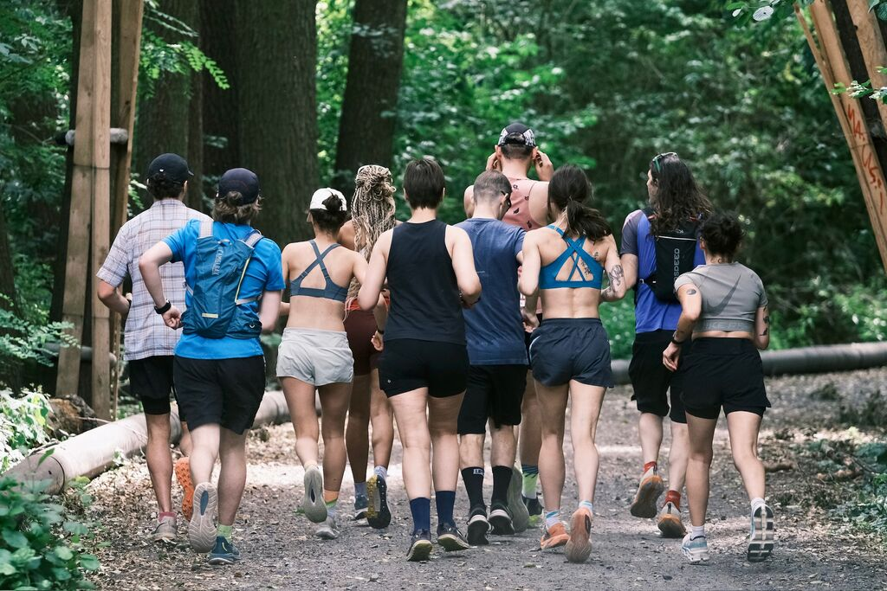
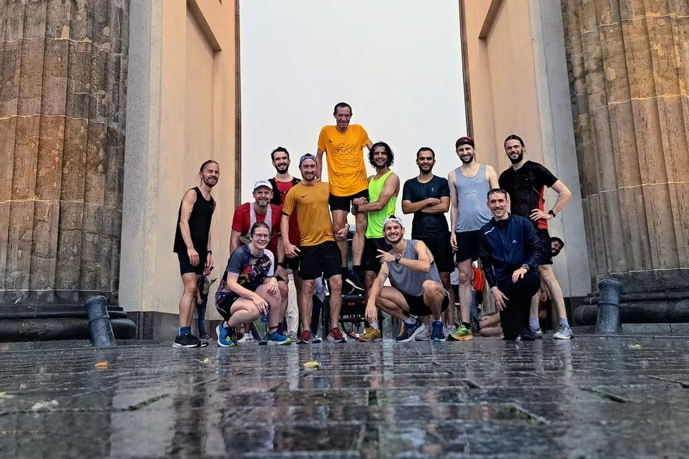
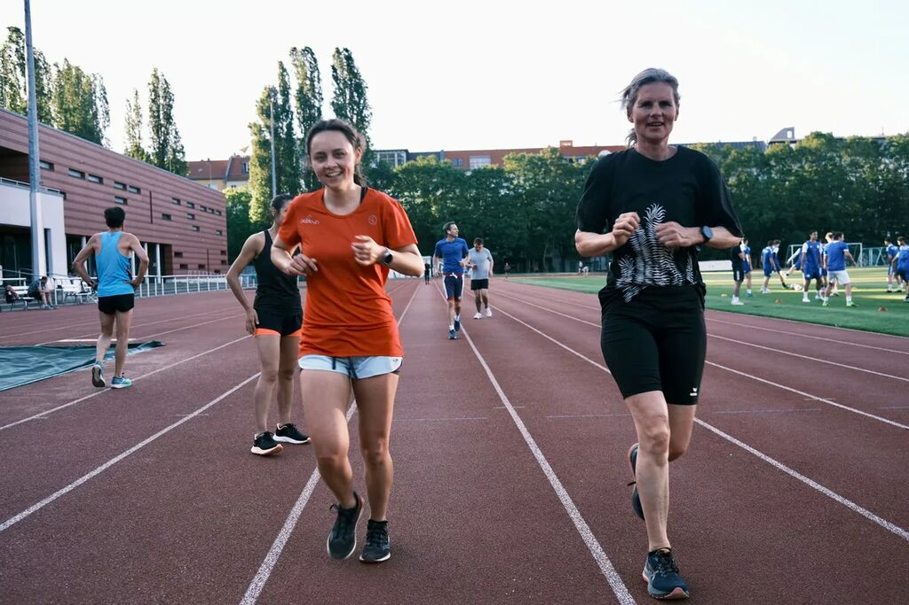
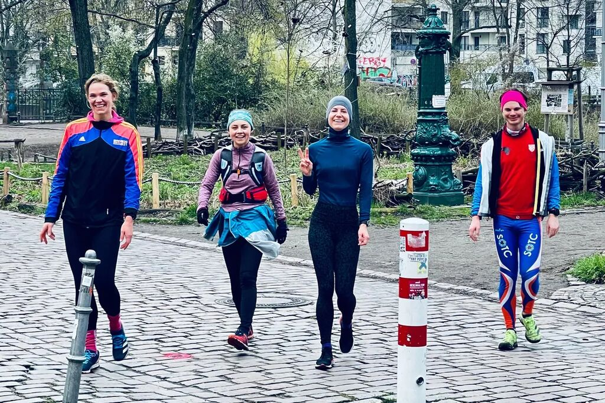
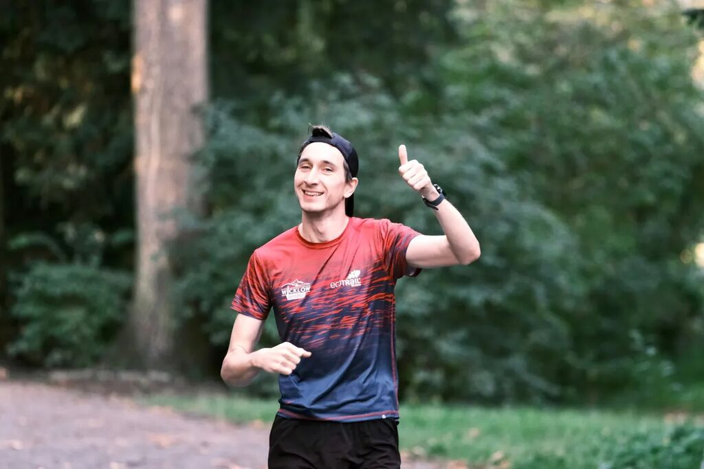

Who we are
Free weekly running in Berlin.
Berlin Harriers is an international, English-speaking running club. We run together in Berlin, on the track, the streets and in the parks, with several free, uncoached runs every week. Just turn up to any session and run with us.





There's a run for every pace and goal, from track sessions that help you build speed to social runs with no set pace. We also head out of the city regularly for trail running events.
Whether you're training for a race or worried you'd be the slowest in the group, you'll fit in. We run because we love it, and it's better with friends. Check our calendar to find the right run for you.
The schedule
Where to find us
Every run is open to everyone, members and first-timers alike. Each one ends somewhere with food or a drink, which is at least half the point.
Please note. Our runs are an informal invitation to run together — they are not organised events of the club and not coached or supervised sessions. There is no registration and no fee. Everyone takes part on their own responsibility and is asked to judge their own fitness and health. We run on public roads and paths, where the normal traffic rules apply and each runner is responsible for their own conduct. Guests who are not members of Berlin Harriers e.V. are not covered by the club's sports insurance.
Season record
Where we have raced
We enter races together rather than as individuals. Most of the time the number that matters is how many of us turned up.
12 AprBerlin Half Marathon14 ran
25 MayTeufelsberg Mile2nd
14 SepCopenhagen Half Marathon6 ran
This week
11 OctBerlin MarathonJoin us
23 NovCross-country, GrunewaldJoin us
Come and run with us
Free, no registration, every pace. The next one is Monday Duck on Monday at 18:30. Just come along.
Joining
You never have to become a member to run with us, and membership itself is free — no fees, no dues. Members get a vote at our meetings and a place on the trips and socials. Applying takes about two minutes and means signing our code of conduct.
If you were at our founding meeting, you are already a member and there is nothing for you to do.
The club
Discord is where the week actually happens — where the Tuesday Track location is posted and where people find someone to run with. It is also the club's living room, with side channels for everything from Berlin events to asparagus appreciation. We keep politics out of it; asparagus is about as divisive as we get.
Questions
Things people ask
The short answers. Anything else, ask in Discord.
Am I fast enough to join?
We have club members of many different speeds. Some of our usual runs are done at easy or conversational paces: we agree the pace depending on who is joining and try to stick together, so no one is left behind. On Tuesday and Saturday everyone runs at their own pace, we cheer each other on and grab a bite or a drink together afterwards. The Harriers is a good place to find people who run at your pace and meet up for runs, and a good place if you're looking to get faster, too.
Do I need to speak German?
No. Our members come from many different countries, and we are a primarily English-speaking club.
What if I am new to running?
We are happy to welcome members who are new to running. It makes us happy to see new people join this awesome sport we love so much. Come along to one of our runs, and we'll be glad to give you tips to help you on your way.
Where do I leave my bag?
Some of our runs take place in more organised settings, like Tuesday Track and the Saturday parkruns, but the other runs during the week have nowhere to leave a bag. We recommend a running backpack if you want to carry a warmer jacket, extra snacks or water.
Do runs go ahead in bad weather?
Generally we meet up rain or shine, but it's best to check the Discord channel for each run the day before or the morning of the run to make sure it's taking place. Runs are sometimes cancelled because of icy conditions.